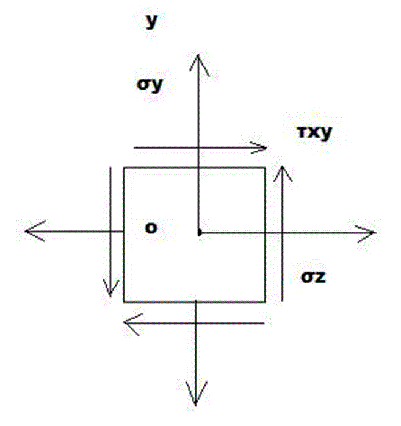
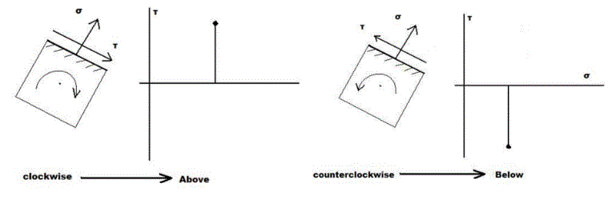

Mohr’s Circle is used to derive some basic formulas relating to the transformation of plane stress and
was first introduced by the German engineer Otto Mohar (1835-1918) and hence is known as Mohr’s
circle for plane stress. This method is based on simple geometric consideration and does not require
the use of specialized formulas. While it was originally designed for graphical solutions, it lends itself
well to the use of a calculator.
Consider a square element of a material subjected to plane stress (figure.1.) and let  ,
, , and
, and  be the component of stress exerted on the element. We plot a point X of coordinates x and -xy, and
a point Y of coordinates and + . If is positive, as assumed in (figure.1.), point X is located
below the
be the component of stress exerted on the element. We plot a point X of coordinates x and -xy, and
a point Y of coordinates and + . If is positive, as assumed in (figure.1.), point X is located
below the  axis and point Y above, as shown in (Figure.2.). If is negative, X is located above the
axis and Y below. Joining X and Y by a straight line, we define the point C of intersection of line XY with
the axis and draw the circle of the centre C and the diameter XY. Noting that the abscissa of C and
radius of the circle are respectively equal to the quantities ave and R defined by equation
axis and point Y above, as shown in (Figure.2.). If is negative, X is located above the
axis and Y below. Joining X and Y by a straight line, we define the point C of intersection of line XY with
the axis and draw the circle of the centre C and the diameter XY. Noting that the abscissa of C and
radius of the circle are respectively equal to the quantities ave and R defined by equation
 and
and 
We conclude that the circle obtained is Mohr’s circle for plane stress. Thus the abscissa of points A and
B where the circles intersect the axis represent respectively the principal stresses max and min at
the point considered.

We also note that, since  (the angle XCA is eqal in magnitude to one of the
angles 2 that satisfies equation
(the angle XCA is eqal in magnitude to one of the
angles 2 that satisfies equation

Thus, the angle
that defines in (figure.1.) the orientation of principle plane corresponds to point A in
(figure.2.) can be obtained by dividing in half the angle XCA measured on Mohr’s Circle. We further
observe that if > and > 0, as in the case considered here, the rotation which brings CX into
CA is counterclockwise. But, in that case, the angle
p obtained from equation

And defining the direction of the normal Oa to the principal plane is positive; thus the rotation bringing
Ox into Oa is also counter clockwise . we conclude that the senses of rotation in both parts of (figure.1
and 2.) are the same; if a counterclockwise rotation through 2 p is required to bring CX into CA on
Mohr’s circle, a counterclockwise rotation through p will bring Ox into Oa in (figure1.).
The construction of Mohr’s circle is greatly simplified if we consider separately each faces of the
element used to define the stress components. From (figure.3 and figure.4) its observed that, when
the shear stress extend on a given face tends to rotate the element clockwise, the point on Mohr’s
circle corresponding to that face is located above the S axis. When the shearing stress on a given face
tends to rotate the element counterclockwise, the point corresponds to that face tends to rotate the
element counterclockwise, the point corresponding to that face is located below the S axis. As far as
normal stresses are concerned, the usual convention holds, i.e., a tensile stress is considered as
positive and is plotted to the right, while a compressive stress is considered as negative and is plotted
to the left.

Click Here to go back.

Objective: To find the properties of the mohr’s circle. STEPS:
- When you open Mohr’s circle- simulation, a window will open as shown below.

- Now put values for the given parameters inside the box.

- After giving values then click on PLOT button.

- The mohr’s circle will be plotted as shown below

- And the properties of the mohr’s circle will be obtained as follow.


- What is the radius of Mohr’s circle?
- Define principal stresses and principal plane?
- Write the formula to calculate shear stress?
- How the centre point of the circle is calculated?

- F.P. Beer and E.R. Johnston, Mechanics of Materials, Tata McGraw – Hill.
- F.L. Singer. Strength of Materials, Harper and Row Publishers.
- Hearns E.J., Mechanics of Materials, Pergaman Press.
- Gere and Timoshenko, Mechanics of Materials, CBS Publishers & Distributors.
- I.H. Shames, Engineering Mechanics – Statics and Dynamics, Prentice Hall of India.
- S.S. Bhavikatti and K.G. Rajashekarappa, Engineering Mechanics, Wiley Eastern Ltd.